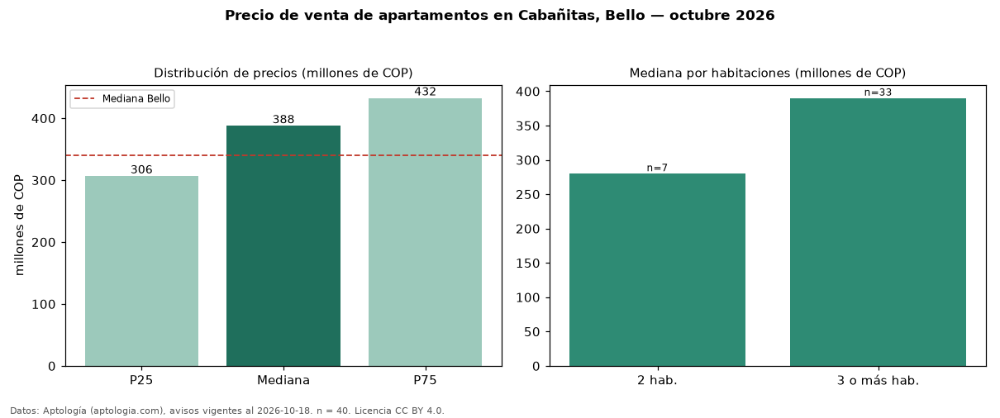

Precio de venta de apartamentos en Cabañitas, Bello — octubre 2026
Con 40 avisos vigentes, el precio mediano de apartamentos en venta en Cabañitas, Bello es COP 388 millones. Frente a la mediana de Bello para apartamentos (COP 340 millones), queda 14 % por encima. Por metro cuadrado, la mediana es COP 4,32 millones/m² (n = 39 avisos con área), 21 % por debajo de Bello (COP 5,46 millones/m²). El área mediana anunciada es 83 m². El segmento con más oferta es el de 3 o más habitaciones (33 avisos, mediana COP 390 millones); pasar de 2 habitaciones a 3 o más habitaciones cambia la mediana +39 %. Por precio mediano es el puesto 7 de 17 barrios de Bello con al menos 30 avisos de apartamentos en venta (COP): en la franja media. El estrato más frecuente es 4 (79 % de los avisos con estrato). 53 % de los avisos con el dato declara parqueadero o cochera. Datos: Aptología (aptologia.com), CC BY 4.0 — https://www.aptologia.com/venta/bello/cabanitas. Archivos: PDF, CSV con las cifras y gráfica PNG.

| Avisos únicos | 40 |
|---|---|
| Percentil 25 | COP 306.500.000 |
| Mediana | COP 387.500.000 |
| Percentil 75 | COP 432.500.000 |
| Mediana por m² | COP 4.320.987 |
Fuente: avisos vigentes de portales inmobiliarios recopilados por Aptología, deduplicados (mínimo 30 avisos únicos por celda). Precios pedidos, no cerrados. Fecha: 2026-10-18.